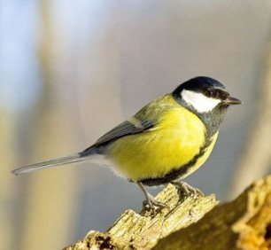

Это большая синица
Большая синица — распространённая птица из семейства синицевых, отряда воробьинообразных. Синица выделяется чёрной головой и шеей, бросающимися в глаза белыми щеками, оливковым верхом и жёлтым низом, с некоторыми вариациями среди многочисленных подвидов. Летом питается преимущественно мелкими насекомыми и другими беспозвоночными. Зимой употребляет в пищу более широкий спектр. Как и все синицы, гнездится в дуплах и пустотах деревьев, а также в разнообразных нишах природного характера и разнообразных постройках. Синицы хорошо приспосабливаются к человеческому вмешательству в среду, часто встречаются в крупных городах и других населённых пунктах, в пригородах, в садах и парках. На больших синицах также проводят важные исследования по орнитологии, генетике и поведению. Уничтожая большое количество вредителей леса, приносит несомненную пользу природе.